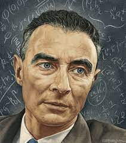

J. Robert Oppenheimer

(1904-1967)
Nascimento e Educação:
J. Robert Oppenheimer nasceu em 22 de abril de 1904, na cidade de Nova Iorque, em uma família abastada. Seu pai, Julius Oppenheimer, era um rico empresário têxtil, e sua mãe, Ella Friedman, vinha de uma família de artistas. Desde jovem, Oppenheimer mostrou uma inteligência notável.
Ele ingressou na Universidade Harvard aos 18 anos, onde inicialmente estudou química. Durante seus anos em Harvard, Oppenheimer demonstrou talento excepcional em uma variedade de disciplinas acadêmicas.
Estudos na Alemanha:
Em 1925, Oppenheimer concluiu seu curso em Harvard e viajou para a Europa para continuar seus estudos. Ele frequentou a Universidade de Cambridge, no Reino Unido, e a Universidade de Göttingen, na Alemanha. Em Göttingen, ele trabalhou com alguns dos maiores físicos teóricos da época, incluindo Max Born e Werner Heisenberg.
Em 1929, Oppenheimer obteve seu doutorado em física teórica pela Universidade de Göttingen. Sua tese, baseada em suas pesquisas sobre a teoria quântica, já indicava seu notável talento e intelecto.
Contribuições Científicas Iniciais:
Após concluir seu doutorado, Oppenheimer retornou aos Estados Unidos e lecionou na Universidade da Califórnia, em Berkeley. Ele rapidamente se destacou como um dos físicos teóricos mais promissores da sua geração.
Oppenheimer fez contribuições significativas para a teoria quântica e a teoria de campos. Sua colaboração com outros físicos renomados, como Enrico Fermi e Wolfgang Pauli, solidificou sua reputação no campo da física teórica.
Desenvolvimento do Grupo de Berkeley:
Oppenheimer desempenhou um papel crucial na formação do Grupo de Berkeley, um coletivo de físicos teóricos que influenciou significativamente o desenvolvimento da física teórica nos anos 1930 e 1940. Seu trabalho em astrofísica, mecânica quântica e teoria de campos foi fundamental para o sucesso do grupo.
Segunda Guerra Mundial e Projeto Manhattan:
Com o início da Segunda Guerra Mundial, Oppenheimer foi recrutado para liderar o Projeto Manhattan, uma iniciativa ultrassecreta dos Estados Unidos para desenvolver a bomba atômica. Sua liderança no projeto foi essencial para o sucesso do programa.
Oppenheimer assumiu o cargo de diretor do Laboratório de Los Alamos, onde uma equipe de cientistas trabalhou intensivamente no desenvolvimento prático da bomba atômica. Em 1945, os Estados Unidos conduziram os testes bem-sucedidos em Alamogordo, Novo México.
Pós-Guerra e Controvérsias:
Após a guerra, Oppenheimer continuou sua carreira acadêmica e administrativa. Ele serviu como conselheiro científico-chefe da recém-criada Comissão de Energia Atômica dos Estados Unidos. No entanto, sua vida foi marcada por controvérsias devido às suas opiniões políticas e associações passadas.
Em 1954, uma audiência de segurança revogou sua autorização de segurança, alegando ligações com comunistas no passado. Esse episódio teve um impacto significativo em sua carreira e vida pessoal.
Morte e Legado:
J. Robert Oppenheimer faleceu em 18 de fevereiro de 1967, aos 62 anos, em Princeton, Nova Jérsei. Ele é lembrado como uma figura complexa e controversa, cujas contribuições para a ciência foram marcadas pelo seu envolvimento no desenvolvimento da bomba atômica e pelos eventos políticos turbulentos da Guerra Fria. Sua vida e carreira continuam a ser objeto de estudo e debate na história da física e da ciência.